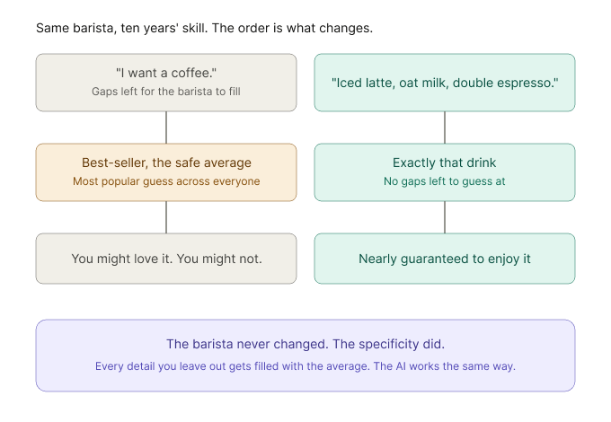

Why AI Fails Predictably?
AI does not fail randomly. When you leave a gap in your prompt, it fills that gap with the most statistically average answer from its training. The failures are predictable once you see them as missing context, not missing intelligence.

Consider ordering coffee. Imagine a barista who has spent ten years mastering his craft, capable of making over fifty different drinks, any one of them excellent. You walk up and say, "I want a coffee." What do you get? Almost certainly the best-selling or highest-rated option—the safe average of everything people tend to order. You might love it. You might not. The barista's skill was never the limiting factor; your request was. But say instead, "I'd like an iced latte with oat milk and a double shot of espresso," and suddenly you are nearly guaranteed to get a drink you enjoy. Nothing about the barista changed. You simply closed the gaps he would otherwise have filled with the most popular guess.
Same thing happens with AI. The fewer gaps you leave, the less it has to guess. And it doesn't guess randomly. It defaults to whatever's most common, the "whole milk" of its training data.